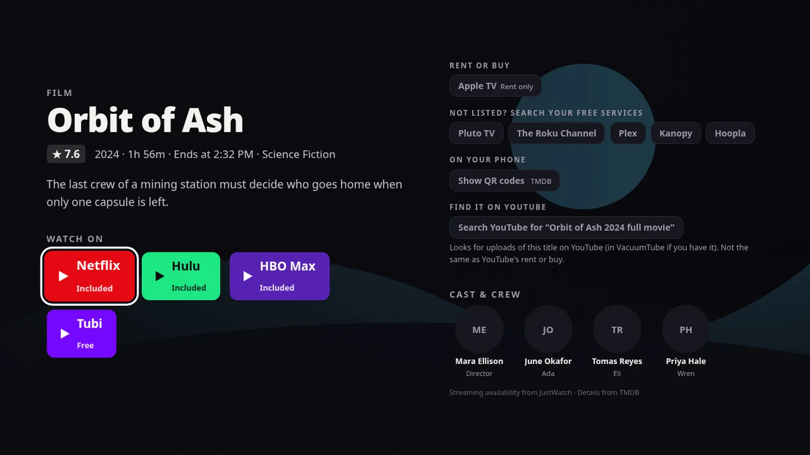

Find it once
Search everything. Watch it wherever it is.
Look up any film or series and see straight away where you can watch it: your own Jellyfin or Plex server first, then the services you pay for, then the free ones. One button opens it there.
- Picks up where you left off and shows what's up next
- Rows of what's popular on the services you actually have
- Your Trakt watchlist and history, if you use it
